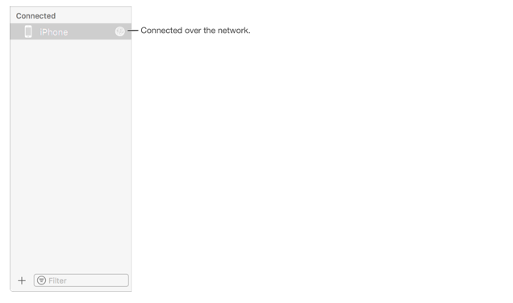

How do you perform wireless debugging in Xcode 9 with iOS 11, Apple TV 4K, etc?
Wireless debugging was recently added as a feature in Xcode 9, iOS 11, and tvOS 11. Apple TV 4K doesn't have a USB port, so it requires wireless debugging. How do you perform this wireless debugging in Xcode?
Answer
Set up a device for network debugging
from help.apple.com
Debug your app running on an iOS or tvOS device over a Wi-Fi or other network connection.
Steps to set up iPhone, iPad, or iPod touch
-
Check that your device has a passcode and add one if it doesn't. Your device must have a passcode to enable remote debugging
-
The Mac and the iPhone/iPad need to be on the same network to use wireless debugging.
Next, in Xcode
- Choose Window > Devices and Simulators , then in the window that appears, click Devices.
- Connect your device to your Mac with a Lightning cable.
- In the left column, select the device, and in the detail area, select Connect via network.

Xcode pairs with your device. If Xcode can connect with the device using a network, a network icon appears next to the device in the left column.

- Disconnect your device.
Now you are ready for debugging over the network.
Sometimes it doesn't work. You might need to restart the device or network connection.
Note: Network debugging requires Xcode 9.0 or later running on macOS 10.12.4 or later, and on the device, requires iOS 11.0 or later, or tvOS 11.0 or later.
Steps to set up Apple TV:
-
Make sure your Mac and your Apple TV are on the same network.
-
Choose Window > Devices and Simulators , then in the window that appears, click Devices.
-
On your Apple TV, open the Settings app and choose Remotes and Devices > Remote App and Devices.
-
The Apple TV searches for possible devices including the Mac. (If you have any firewall or Internet security, disable/turn it off to allow searching.)
-
On your Mac, select the Apple TV in the Devices pane. The pane for the Apple TV is displayed and shows the current status of the connection request.
-
Enter the verification code displayed on your AppleTV into the Device window pane for the device and click Connect.
Xcode sets up the Apple TV for wireless debugging and pairs with the device.


Suggest
I have tried using Xcode Devices window's Connect via network options. but I am unable to see the "Connected over the network" icon next to the device name. also as soon as remove the USB the "Connect via network" option disappeared. also, the device name appears under the disconnected device list.
But using the "Connect via IP Address..." option, I am able to connect.
- Right-click on the device name(Under Disconnected list) and choose "Connect via IP Address...." option.

- Type the IP address of the device and chose Connect. (you can find through mobile device Settings > Wi-Fi > Choose the wifi name)